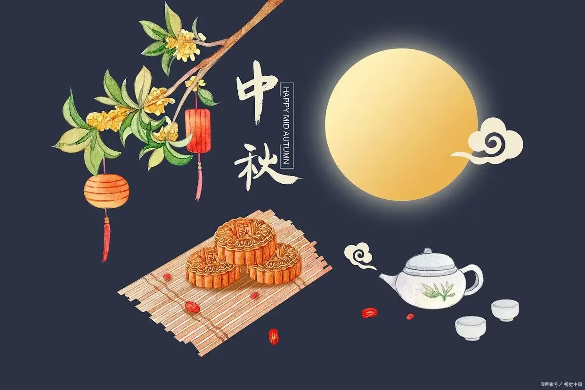

中秋节

中秋节，是仲秋之节，在进入秋季的第二个月，以十五月圆为标志，这天正值三秋之中，故谓之“中
秋”。
此夜月色比平时更亮，又谓之“月夕”。因为中秋节在秋季、八月，又名“秋节”、“八月节”；
因为祭月、拜月，又叫“月节”、“月亮节”；中秋家人团聚，出嫁的女儿回家团圆，因此又称“团圆
节”、“女儿节”；
仲秋时节各种瓜果成熟上市，因称“果子节”。侗族称为“南瓜节”，仫佬族称
为“后生节”等。
人们在中秋时节欢聚赏月、祭祀、庆贺丰收。
中秋节还被称为“端正月”。关于“团圆节”的记载最早见于明代文学作品。
《西湖游览志余》中
说：“八月十五谓中秋，民间以月饼相送，取团圆之意。”
《帝京景物略》中也说：“八月十五祭月，其
饼必圆，分瓜必牙错，瓣刻如莲花。……其有妇归宁者，是日必返夫家，曰团圆节也。”
最初“祭月节”的节期是在干支历二十四节气“秋分”这天，后来才调至夏历（农历）八月十五。
根据
中国的历法，农历八月在秋季中间，为秋季的第二个月，称为“仲秋”，而八月十五又在“仲秋”之中，
所以称“中秋”。
八月中秋正是收获季节，古人要举行祭祀土神的仪式，叫作“秋报”“秋社”。《白虎通·社稷》
载：“仲秋之月，择元日，命民社。
《援神契》曰：‘仲春祈谷，仲秋获禾，报社祭稷。’”夕月、秋
社，可视为中秋节的渊源。